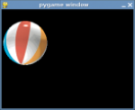

Este artículo es una introducción a la biblioteca Pygame para programadores Python. La versión original apareció en PyZine, volumen 1 tercera edición. Esta versión contiene revisiones menores, para crear un mejor artículo. Pygame es una biblioteca de extensión de Python que encapsula la funcionalidad de la biblioteca SDL y sus ayudantes.
Pygame comenzó en el verano del 2000. Siendo un programador C por muchos años, descubrí Python y SDL casi al mismo tiempo. Usted ya está familiarizado con Python, que estaba en su versión 1.5.2, por lo tanto podría necesitar una introducción a SDL, que significa Simple Directmedia Layer. Creada por Sam Lantinga, es una biblioteca multiplataforma para controlar multimedia, comparable a DirectX. A sido usada para cientos de juegos comerciales y de código abierto.
Estaba impresionado por lo nítidos y directos que eran ambos proyectos y no pasó mucho tiempo antes que me diera cuenta que mezclar Python y SDL era una propuesta interesante.
Descubrí un pequeño proyecto ya en curso con exactamente la misma idea, PySDL. Creada por Mark Baker, PySDL era una implementación directa de SDL como una extensión de Python. La interfase era mas limpia que una envoltura genérica SWIG, pero forzaba un “estilo C” al código. La muerte repentina de PySDL se incito a empezar un nuevo proyecto por mi cuenta.
Quería generar un proyecto que realmente tomara ventaja de Python. Mi meta era hacer muy simple realizar las cosas sencillas, y directo para hacer las cosas difíciles. Pygame empezó en Octubre del 2000. Seis meses mas tarde la versión 1.0 de Pygame fue lanzado.
Creo que la mejor forma de entender una nueva biblioteca es ir directamente a un ejemplo. En las etapas tempranas de Pygame desarrollé una animación de una pelota que rebotaba con 7 lineas de código. Miremos una versión mas amigable de la misma cosa.
Debería ser lo suficientemente simple para seguirlo:
Código fuente: ball.py
1. import sys, pygame 2. pygame.init() 3. 4. size = width, height = 320, 240 5. speed = [2, 2] 6. black = 0, 0, 0 7. 8. screen = pygame.display.set_mode(size) 9. 10. ball = pygame.image.load("ball.png") 11. ballrect = ball.get_rect() 12. 13. while 1: 14. 15. for event in pygame.event.get(): 16. 17. if event.type == pygame.QUIT: 18. sys.exit() 19. 20. ballrect = ballrect.move(speed) 21. 22. if ballrect.left < 0 or ballrect.right > width: 23. speed[0] = -speed[0] 24. 25. if ballrect.top < 0 or ballrect.bottom > height: 26. speed[1] = -speed[1] 27. 28. screen.fill(black) 29. screen.blit(ball, ballrect) 30. pygame.display.flip()
Para probar este programa simplemente baje los archivos ball.py y ball.png a su computadora y ejecute python ball.py  Esta es la manera mas simple de hacer una animación de una pelota que rebota. Primero vemos que importar e inicializar Pygame no es algo digno de prestarle atención. El “import pygame” incorpora el paquete con todos los módulos Pygame disponibles.
La llamada a “pygame.init()” inicializa cada uno de estos módulos.
En la linea 8 creamos una ventana gráfica con la llamada a “pygame.display.set_mode()”. Pygame y SDL hacen esto simple predeterminando los mejores modos gráficos para el hardware del equipo. Puedes anular el modo y SDL compensará todo lo que el hardware no puede hacer.
Pygame representa a las imágenes como objetos Surface. La función “display.set_mode()” crea un nuevo objeto Surface que referencia a la representación actual de pantalla. Cualquier dibujo que se haga sobre este objeto Surface se hace visible en el monitor.
En la linea 10 cargamos nuestra imagen de la pelota. Pygame soporta una gran variedad de formatos de imágenes a través de la biblioteca SDL_image, incluyendo JPG, PNG, TGA, y GIF. La función “pygame.image.load()” nos devuelve un objeto Surface con los datos de la pelota. La Surface mantendrá cualquier color o transparencia Alpha del archivo. Después de cargar la imagen de la pelota creamos una variable llamada ballrect.
Pygame incluye un tipo de objeto de utilidad conveniente llamado Rect, que representa un área rectangular. Mas tarde, en la parte de animación del código, veremos que se puede hacer con Rect.
En este punto, la linea 13, nuestro programa está inicializado y listo para ejecutarse. Dentro de un ciclo infinito verificamos las entradas de datos del usuario, movemos la pelota, y después dibujamos la pelota.
Si está familiarizado con la programación GUI, tiene experiencia con eventos y ciclos de eventos. En Pygame no hay diferencia, verificamos si un evento QUIT ha llegado. Si es así, simplemente cerramos el programa, Pygame se asegura que todo se cierra limpiamente.
Es tiempo de actualizar la posición de la pelota. Las lineas 17 a 21 mueven la variable ballrect a la velocidad actual. Si la pelota se ha movido afuera de la pantalla, revertimos la velocidad en esa dirección. No es exactamente física Newtoniana, pero es todo lo que necesitamos.
En la linea 23 borramos la pantalla rellenándola con un color negro RGB. Si nunca ha trabajado con animaciones esto le será extraño. Se estará preguntando “¿por que hay necesidad de borrar todo, por que no movemos directamente la pelota en la pantalla?”; Así no es exactamente como trabajan las animaciones en computadora. Las animaciones no son mas que una serie de imágenes individuales, que desplegadas en secuencia engañan fácilmente al ojo humano para que vea movimiento. La pantalla es simplemente una imagen individual que el usuario ve. Si no nos tomamos un tiempo para borrar la pelota de la pantalla, veremos en realidad un “rastro” del movimiento mientras dibujamos continuamente la pelota en nuevas posiciones.
En la linea 24 dibujamos la imagen de la pelota en la pantalla. El dibujo de imágenes es manejado por el método “Surface.blit()”. Un blit básicamente significa copiar píxeles de color de una imagen a otra. Le pasamos al método blit un Surface fuente para que copie de él, y una posición para poner la fuente sobre el destino.
La ultima cosa que necesitamos hacer es actualizar la pantalla. Pygame maneja la pantalla con Double Buffer. Cuando terminamos de dibujar llamamos al método “pygame.display.flip()”. Esto hace que todo lo que dibujamos en la pantalla se haga visible. Este almacenamiento intermedio se asegura que solo veamos pantallas completamente dibujadas en la pantalla. De otra forma, el usuario vería partes a la mitad de la pantalla mientras estas son creadas.
Así concluye esta corta introducción a Pygame. Pygame también contiene un módulo para hacer cosas como manejo de entradas para el teclado, mouse y joystick. Puede mezclar audio y reproducir música. Con los objetos Surface puede dibujar formas simples, rotar y escalar una imagen. Incluso puede manipular los píxeles de una imagen en tiempo real como un arreglo Numeric de Python. Hay soporte para reproducir video MPEG y CDs de audio. Pygame también tiene la habilidad de funcionar como una capa de visualización multiplataforma para PyOpenGL.
La mayoría de los módulos de Pygame están escritos en lenguaje C, pocos actualmente están realizados con Python.
El sitio web de Pygame tiene una documentación de referencia completa para toda función de Pygame y tutoriales para usuarios de todos los niveles. El código fuente de Pygame viene con varios ejemplos de cosas como “monkey punching” y “UFO shooting”.
Si no les funciona el ejemplo cuando ponen la imagen en la misma carpeta que el codigo fuente importen el modulo os asi import os,y prueben agregando esta linea de codigo antes de la linea 10:
ruta = os.path.join(“data”, 'ball.png'), que especifica la ruta donde esta la imagen y en la linea 10 cambien ball.png por ruta asi: ball = pygame.image.load(ruta) y creen una carpeta llamada data dentro de la carpeta donde esta el codigo fuente , en esta carpeta llamada data es donde ponemos la imagen ball.png
¿Es Python conveniente para juegos? La respuesta es, “Depende del juego”. Python es realmente bastante capaz de correr juegos. Probablemente hasta lo sorprenda cuanto se puede hacer en menos de 30 milisegundos. Aún así, no es difícil llegar al techo una vez que su juego se haga mas complejo. Cualquier juego ejecutándose en tiempo real hará uso completo de la computadora.
Durante los últimos años ha existido una tendencia interesante en el desarrollo de juegos, que se acerca a lenguajes de mas alto nivel. Usualmente un juegos se divide en 2 grandes partes. El motor del juego, el cual tiene que ser lo mas rápido posible, y la lógica del juego, que le indica al motor que debe realizar. No hace mucho tiempo que el motor de un juego se escribía en Assembler, con porciones escritas en lenguaje C. Hoy en día, C se ha trasladado al motor del juego, mientras que el juego mismo es escrito en un lenguaje de Scripts de mas alto nivel. Juegos como Quake 3 y Unreal ejecutan estos Scripts como código binario portable.
Al comienzo del 2001, el desarrollador Rebel Act Studios terminó su juego, Severance: Blade of Darkness. Usado su propio motor de 3D a medida, el resto del juego está escrito en Python. El juego es en tercera persona de acción sangrienta. Usted controla a guerreros medievales en intrincadas combinaciones de ataques “decapitantes” mientras explora calabozos y castillos. Puede descargar agregados creados por terceras partes para este juego, y encontrar que no son nada mas que archivos fuente de Python.
Recientemente, Python ha sido usado por una variedad de juegos como Freedom Force, y Humungous' Backyard Sports Series.
Pygame y SDL sirven como excelentes motores C para juegos 2D. Los juegos igualmente pasarán la mayor parte del tiempo de ejecución dentro de SDL manejando sus gráficos. SDL puede tomar ventaja de la aceleración de hardware de gráficos. Habilitando esto, se puede elevar el rendimiento de un juego que corre aproximadamente a 40 cuadros por segundo hasta 200 cuadros por segundos. Cuando se ve a un juego de Python ejecutando a 200 cuadros por segundos, se puede ver que Python y los juegos pueden funcionar juntos.
Es impresionante cuan bien funcionan Python y SDL en múltiples plataformas. Por ejemplo, en Mayo del 2001 lance mi propio proyecto Pygame completo, SolarWolf, un juego de acción del estilo Arcade.
Una cosa que me ha sorprendido es que un año mas tarde, no ha existido la necesidad de parches, arreglo de Bugs, o actualizaciones. El juego fue desarrollado enteramente en Windows, pero corre en Linux, Mac OSX y muchos Unix sin la necesidad de trabajo extra por mi lado.
Aún así, hay limitaciones muy claras. La mejor manera de manejar gráficos de aceleradoras de video no es siempre la forma de obtener resultados rápidos del Software que procesa gráficos. El soporte de hardware no está disponible en todas las plataformas. Cuando un juego se hace mas complejo, usualmente se tiene que comprometer con uno u otro. SDL tiene otras limitaciones de diseño, cosas como los desplazamientos de pantalla completa pueden llevar rápidamente a su juego a velocidades injugables.
Mientras SDL no es conveniente para todo tipo de juegos, recuerde que compañías como Loki usaron SDL para ejecutar una gran variedad de títulos de calidad de ventas por menor.
Pygame es de bajo nivel cuando se trata de escribir juegos. Se encontrará rápidamente en la necesidad de envolver funciones comunes en su propio ambiente de juego. La gran ventaja de esto es que no hay nada en Pygame que le impida seguir su camino. Su programa está en total control de todo. El efecto colateral de esto es que se encontrará pidiendo prestado mucho código para realizar un marco de trabajo mas avanzado. Necesitará un mejor entendimiento de lo que está haciendo.
Desarrollar juegos es muy gratificante, existe algo muy excitante en ser capaz de ver e interactuar con el código que uno escribió. Pygame está actualmente siendo usado por casi 30 proyectos. Varios de ellos están listos para jugar ahora. Puede que le sorprenda visitar el sitio web de Pygame, y ver lo que otros usuarios han podido hacer con Python.
Algo que me ha llamado la atención es la cantidad de personas que han accedido a Pyhon por primera vez para probar el desarrollo de juegos. Veo por que los juegos son atractivos para los nuevos programadores, pero puede ser difícil porque crear juegos requiere un gran conocimiento del lenguaje. He intentado dar mi apoyo a este grupo de usuarios creando muchos ejemplos y tutoriales de Pygame para personas novatas en estos conceptos.
Al final de cuentas, mi consejo en mantener las cosas simples. Si está planeando crear su primer juego, hay mucho para aprender. Hasta un juego muy simple desafiará sus diseños, y los juegos complejos no necesariamente son juegos divertidos. Cuando entienda Python, puede usar Pygame para crear un juego simple en solo una o dos semanas. Desde ahí, necesitará una sorpresiva cantidad de tiempo para agregar el terminado que lo convertirá en un juego presentable completo.
{kind=link}
{kind=link}
{kind=link}
{kind=link}
{kind=link}
{kind=link}